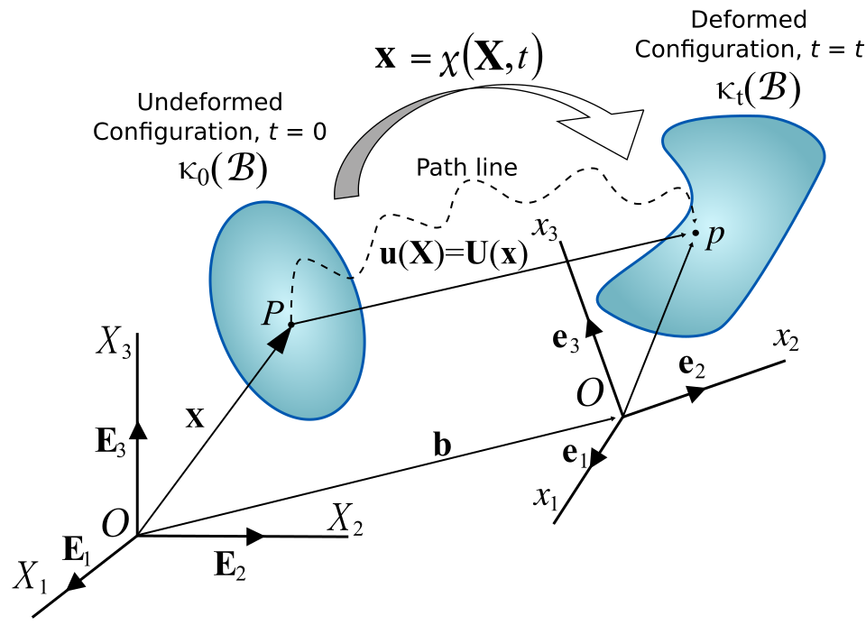

Governing Equations
Table of Contents
Description of motion
Considering the motion of a continuum body within wich a material point (particle) moves from it original psition \(P\) at time \(t = 0\) to its current position \(p\) at time \(t\), as show in the the figure 1.

Figure 1: Initial configuration and current configuration.
The region of the three-dimensional (3D) Euclidean space occupied by the body at time \(t\) is called
the initial or undeformed configuration (\(\Omega_0\)), while the region of 3D Euclidean space
occupied by the body at time t is called the current or deformed configuration (\(\Omega\)).
To measure the motion of the body, one particular configuration should be selected as the
reference configuration to which the motion of the body will be referred.
Any possible configuration can be chosen as the reference configuration,
but a common practice is to choose the initial configuration as the reference configuration.
The original position vector \(X\) of a particle in the reference configuration can be expressed as
\ref{eq:reference_config}.
where \(E_i\) is the unit vector that defines the basis of the material (body-frame) coordinate system, and the components \(X_i\) are the coordinates of the particle in the material coordinate system. Here, the subscripts with the lowercase Latin alphabet, such as i, j, and k, indicate the spatial components following the Einstein summation convection, namely, repeated indices imply the summation over all the values of the index. The original position vector \(X\) of the particle \(P\) serves as a label to the particle. The coordinate \(X_i\) are called the material coordinates or Lagrangian coordinates. The position of the vector \(x\) of the particle \(X\) in the current configuration, as we can see in the figure 1, and can be writen as \ref{eq:current_config}.
\begin{equation} \label{eq:current_config} x = x_i e_i \quad i = 1, 2, 3 \end{equation}
where \(e_i\) is the unit vector that defines the basis of the spatial coordinate system, and the
components \(x_i\) are the coordinates of the particle in the spatial coordinate system. The
coordinates \(x_i\) define the spatial position of the particle such that they are called the
spatial coordinates or Eulerian coordinates. The motion and defomration of a continnuum
body can be described by the evolution of configuration with time. There are two types of
descriptions for the motion, namely material or Lagrangian description and spatial or
Eulerian description. The Lagrangian description is in terms of the material coordinates
so that the position and physical properties of the particle are described in therms of the
material coordinates \(X\) and time t. The reference configuration is the initial configuration
\(t = 0\). In the Lagrangian description, an observer standing in the body-frame observes the changes
in the position and physical properties as the contunuum body moves in space with time, which is
commonly used in solid mechanics.
Deformation gradient
Rate of deformation
Cauchy stress
Jaumann stress rate
Updated Lagrangian Formulation
Conservation of Mass
Balance of momentum
In the following derivation of the discrete equations, bold face quantities indicate tensor, \(\nabla\) id the gradient operator, \(\cdot\), and \(:\) are first (vector) and second order tensor contraction, respectively. The subscript \(p\) is used to index material point variables and \(i\) grid vertex variables. The notation \(\sum_p^{Np}\) and \(\sum_i^{Np}\) is used to denote summation over all material points, and over all grid vertex, respectively.
Of interest in solid mechanics is the deformation and material response to a continuous solid body under prescribed loads and initial conditions, as governed by conservation of mass and momentum. Conservation of mass is satisfied implicitly by leaving discrete particle masses unchanged throughout a computation. Here we develop the discrete version of conservation of momentum, which permits evolution of particle momenta in time. We consider a deformable body acted upon by forces and subjected to either kinematic or traction boundary conditions every where on its surface. The continuum mechanics theory
- Balance of momentum
- Compatibility
Conservation of Energy
Governing Equations
Weak form of the updated Lagrangian Formulation
We works over the balance of momentum in the strong formulation, as we can see in \ref{eq:sf_conserv_momentum}
\begin{equation} \label{eq:sf_conserv_momentum} \rho a = \nabla \cdot(\sigma) + \rho b \end{equation}Define now a function \(\psi\) belongs to a Hilbert space \(\mathcal{H}\) (vectorial space with scalar product defined) wich verifies \(a(\ddot{u},\dot{u},u,\psi)=l(\psi) \quad \forall\ \psi\ \in\ \mathcal{H}\). In other hand, in every point of \(\Omega\) where we have imposed the Dirichlet bounday condition,
\begin{equation} \mathcal{H} = \{ \psi(x)/\psi \mid_{\Gamma_D} = 0 \quad , \quad \psi \in H^1(\Omega) \} \end{equation}In other words, \(\mathcal{H}\) is the space defined by all the functions \(g\), that $ ψ$ and \(\nabla \psi\) are square-integrable function in \(\Omega\)
\begin{equation} \int_{\Omega}\psi\ d\Omega < \infty \quad , \quad \int_{\Omega}\nabla\psi\ d\Omega < \infty \end{equation}Multiplying by \(\psi\) we get \ref{eq:var_conserv_momentum}
\begin{equation} \label{eq:var_conserv_momentum} \psi^T \cdot \rho a = \psi^T \cdot \nabla\cdot(\sigma) + \psi^T \cdot \rho b \end{equation}Integrating over \(\Omega\) we get :
\begin{equation} \int_{\Omega} \psi^T \cdot \rho a\ d\Omega = \int_{\Omega} \psi^T \cdot \nabla\cdot(\sigma)\ d\Omega + \int_{\Omega} \psi^T \cdot \rho b\ d\Omega \end{equation}Integrating by parts the therm of the internal tension, we get :
\begin{equation} \int_{\Omega} \psi^T\cdot \rho a\ d\Omega = \int_{\Omega} \nabla\cdot \left( \psi^T \cdot \sigma \right)\ d\Omega - \int_{\Omega} \nabla\psi^T : \sigma\ d\Omega + \int_{\Omega} \psi^T\cdot b\ d\Omega \end{equation}Applying the Gauss theorem over it, and following the definition of the stress vector \(t = \sigma \cdot n\) where \(n\) is the vector orthogonal to a surface in the solid, finally we get the variational form for conservation of momentum may be written as
\begin{equation} \int_{\Omega} \psi^T \cdot \rho a\ d\Omega = \int_{\Gamma} \psi^T \cdot \overbrace{\sigma \cdot n}^{t}\ d\Gamma - \int_{\Omega} \nabla \psi^T : \sigma\ d\Omega + \int_{\Omega} \psi^T b\ d\Omega \end{equation}Finally we get :
\begin{equation} \int_{\Omega} \psi^T \cdot \rho a\ d\Omega = \int_{\Gamma} \psi^T \cdot t \ d\Gamma - \int_{\Omega} \nabla \psi^T : \sigma\ d\Omega + \int_{\Omega} \psi^T b\ d\Omega \end{equation}